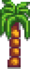
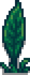
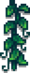
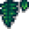
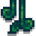
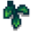

Se déroule le 11 d'Eté
Ce festival prend place chaque année à la plage entre 9h et 14h. Lors de cette journée, le joueur aura la possibilité de mettre un ingrédient dans la soupe en interagissant avec la grosse bassine de soupe puis pour lancer l’évènement le joueur devra parler à Lewis. L’évènement se termine lorsque le gouverneur goutte la soupe et réagis à celle-ci.
Le gouverneur peut réagir de 6 façons différentes : Réponse manquante, Meilleure réponse, Bonne réponse, Réponse neutre, Mauvaise réponse et Pire réponse. Il y a aussi une réponse secrète.
Boutique d'objet
| Image | Nom | Description | Prix |
|---|---|---|---|
|  | Decoration murale en forme de palmier | Peut se mettre à l’intérieur de votre maison. |  1 000 po 1 000 po |
|   | Decoration de la jungle/td> | Peut se mettre à l’intérieur de votre maison. | 800 po |
|    | Decoration murale en forme de feuille | Peut se mettre à l’intérieur de votre maison. | 400 po |
| Totem | Peut servir de décoration. | 1000 po |
|
| Carambole | Fruit extrêmement juteux qui pousse par temps chaud et humide. Légèrement sucré avec une pointe d'amertume. | 3 000 po |
|
| Flambeau ordinaire | Peut servir de décoration. | 700 po |
Note personelle
Classement 6/9
Cet évènement est intéressant car au fil des années on apprend ce qu'il faut mettre ou non dans la soupe mais mis à part ça, on ne peut rien faire d'autre durant cet évenement.